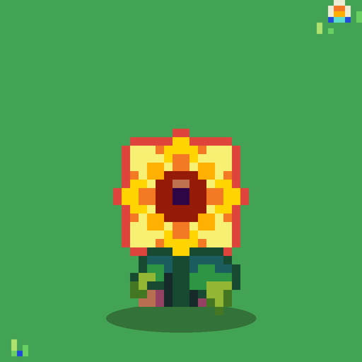

<- all projects

Seed Diary
PC
Volume
Live
Plant. Cross. Record. Rebuild a lost seed library.
In the attic of your new cottage you find a 1923 diary kept by Wren Ashby, who ran the valley's seed library until a hard frost wiped it out. Each season you place a row of seed packets in a small garden bed, where matching flowers score together, tall flowers shade short ones and the right pairs cross into new varieties. Breed nine heirloom flowers and twenty-four hybrids across 120 hand-checked seasons and five years in the valley, and follow Wren's notes to a secret she kept for a hundred years.